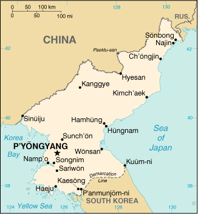

|
Korea, North | |
| Introduction Geography People Government Economy Communications Transportation Military Transnational Issues | ||
|  | ||
| Korea, North | Introduction | Top of Page |
| Background: | Following World War II, Korea was split into a northern, communist half and a southern, Western-oriented half. KIM Chong-il has ruled North Korea since his father and the country's founder, president KIM Il-song, died in 1994. After decades of mismanagement, the North relies heavily on international food aid to feed its population, while continuing to expend resources to maintain an army of about 1 million. North Korea's long-range missile development and research into nuclear and chemical weapons are of major concern to the international community. |
| Korea, North | Geography | Top of Page |
| Location: | Eastern Asia, northern half of the Korean Peninsula bordering the Korea Bay and the Sea of Japan, between China and South Korea |
| Geographic coordinates: | 40 00 N, 127 00 E |
| Map references: | Asia |
| Area: |
total:
120,540 sq km
land: 120,410 sq km water: 130 sq km |
| Area - comparative: | slightly smaller than Mississippi |
| Land boundaries: |
total:
1,673 km
border countries: China 1,416 km, South Korea 238 km, Russia 19 km |
| Coastline: | 2,495 km |
| Maritime claims: |
territorial sea:
12 NM
exclusive economic zone: 200 NM note: military boundary line 50 NM in the Sea of Japan and the exclusive economic zone limit in the Yellow Sea where all foreign vessels and aircraft without permission are banned |
| Climate: | temperate with rainfall concentrated in summer |
| Terrain: | mostly hills and mountains separated by deep, narrow valleys; coastal plains wide in west, discontinuous in east |
| Elevation extremes: |
lowest point:
Sea of Japan 0 m
highest point: Paektu-san 2,744 m |
| Natural resources: | coal, lead, tungsten, zinc, graphite, magnesite, iron ore, copper, gold, pyrites, salt, fluorspar, hydropower |
| Land use: |
arable land:
14%
permanent crops: 2% permanent pastures: 0% forests and woodland: 61% other: 23% (1993 est.) |
| Irrigated land: | 14,600 sq km (1993 est.) |
| Natural hazards: | late spring droughts often followed by severe flooding; occasional typhoons during the early fall |
| Environment - current issues: | water pollution; inadequate supplies of potable water; water-borne disease; deforestation; soil erosion and degradation |
| Environment - international agreements: |
party to:
Antarctic Treaty, Biodiversity, Climate Change, Environmental Modification, Ozone Layer Protection, Ship Pollution
signed, but not ratified: Antarctic-Environmental Protocol, Law of the Sea |
| Geography - note: | strategic location bordering China, South Korea, and Russia; mountainous interior is isolated and sparsely populated |
| Korea, North | People | Top of Page |
| Population: | 21,968,228 (July 2001 est.) |
| Age structure: |
0-14 years:
25.52% (male 2,873,390; female 2,733,163)
15-64 years: 67.63% (male 7,301,531; female 7,556,554) 65 years and over: 6.85% (male 486,805; female 1,016,785) (2001 est.) |
| Population growth rate: | 1.22% (2001 est.) |
| Birth rate: | 19.1 births/1,000 population (2001 est.) |
| Death rate: | 6.92 deaths/1,000 population (2001 est.) |
| Net migration rate: | 0 migrant(s)/1,000 population (2001 est.) |
| Sex ratio: |
at birth:
1.05 male(s)/female
under 15 years: 1.05 male(s)/female 15-64 years: 0.97 male(s)/female 65 years and over: 0.48 male(s)/female total population: 0.94 male(s)/female (2001 est.) |
| Infant mortality rate: | 23.55 deaths/1,000 live births (2001 est.) |
| Life expectancy at birth: |
total population:
71.02 years
male: 68.04 years female: 74.15 years (2001 est.) |
| Total fertility rate: | 2.26 children born/woman (2001 est.) |
| HIV/AIDS - adult prevalence rate: | NA% |
| HIV/AIDS - people living with HIV/AIDS: | NA |
| HIV/AIDS - deaths: | NA |
| Nationality: |
noun:
Korean(s)
adjective: Korean |
| Ethnic groups: | racially homogeneous; there is a small Chinese community and a few ethnic Japanese |
| Religions: |
traditionally Buddhist and Confucianist, some Christian and syncretic Chondogyo (Religion of the Heavenly Way)
note: autonomous religious activities now almost nonexistent; government-sponsored religious groups exist to provide illusion of religious freedom |
| Languages: | Korean |
| Literacy: |
definition:
age 15 and over can read and write Korean
total population: 99% male: 99% female: 99% (1990 est.) |
| Korea, North | Government | Top of Page |
| Country name: |
conventional long form:
Democratic People's Republic of Korea
conventional short form: North Korea local long form: Choson-minjujuui-inmin-konghwaguk local short form: none note: the North Koreans generally use the term "Choson" to refer to their country abbreviation: DPRK |
| Government type: | authoritarian socialist; one-man dictatorship |
| Capital: | P'yongyang |
| Administrative divisions: | 9 provinces (do, singular and plural) and 3 special cities* (si, singular and plural); Chagang-do (Chagang Province), Hamgyong-bukto (North Hamgyong Province), Hamgyong-namdo (South Hamgyong Province), Hwanghae-bukto (North Hwanghae Province), Hwanghae-namdo (South Hwanghae Province), Kaesong-si* (Kaesong City), Kangwon-do (Kangwon Province), Namp'o-si* (Namp'o City), P'yongan-bukto (North P'yongan Province), P'yongan-namdo (South P'yongan Province), P'yongyang-si* (P'yongyang City), Yanggang-do (Yanggang Province) |
| Independence: | 15 August 1945 (from Japan) |
| National holiday: | Founding of the Democratic People's Republic of Korea (DPRK), 9 September (1948) |
| Constitution: | adopted 1948, completely revised 27 December 1972, revised again in April 1992 and September 1998 |
| Legal system: | based on German civil law system with Japanese influences and Communist legal theory; no judicial review of legislative acts; has not accepted compulsory ICJ jurisdiction |
| Suffrage: | 17 years of age; universal |
| Executive branch: |
chief of state:
KIM Chong-il (since NA July 1994); note - in September 1998, KIM Chong-il was reelected Chairman of the National Defense Commission, a position accorded the nation's "highest administrative authority"; KIM Yong-nam was named President of the Supreme People's Assembly Presidium and given the responsibility of representing the state and receiving diplomatic credentials
head of government: Premier HONG Song-nam (since 5 September 1998) cabinet: Cabinet (Naegak), members, except for the Minister of People's Armed Forces, are appointed by the Supreme People's Assembly elections: premier elected by the Supreme People's Assembly; election last held NA September 1998 (next to be held NA) election results: HONG Song-nam elected premier; percent of Supreme People's Assembly vote - NA% |
| Legislative branch: |
unicameral Supreme People's Assembly or Ch'oego Inmin Hoeui (687 seats; members elected by popular vote to serve five-year terms)
elections: last held 26 July 1998 (next to be held NA 2003) election results: percent of vote by party - NA%; seats by party - the KWP approves a single list of candidates who are elected without opposition; minor parties hold a few seats |
| Judicial branch: | Central Court (judges are elected by the Supreme People's Assembly) |
| Political parties and leaders: | Chondoist Chongu Party [YU Mi-yong, chairwoman]; Korean Social Democratic Party [KIM Pyong-sik, chairman]; major party - Korean Workers' Party or KWP [KIM Chong-il, General Secretary] |
| Political pressure groups and leaders: | NA |
| International organization participation: | ARF (dialogue partner), ESCAP, FAO, G-77, ICAO, ICRM, IFAD, IFRCS, IHO, IMO, Intelsat (nonsignatory user), IOC, ISO, ITU, NAM, UN, UNCTAD, UNESCO, UNIDO, UPU, WFTU, WHO, WIPO, WMO, WToO |
| Diplomatic representation in the US: | none; note - North Korea has a Permanent Mission to the UN in New York, headed by YI Hyong-chol |
| Diplomatic representation from the US: | none (Swedish Embassy in P'yongyang represents the US as consular protecting power) |
| Flag description: | three horizontal bands of blue (top), red (triple width), and blue; the red band is edged in white; on the hoist side of the red band is a white disk with a red five-pointed star |
| Korea, North | Economy | Top of Page |
| Economy - overview: | North Korea, one of the world's most centrally planned and isolated economies, faces desperate economic conditions. Industrial capital stock is nearly beyond repair as a result of years of underinvestment and spare parts shortages. The nation faces its seventh year of food shortages because of weather-related problems, including major drought in 2000, and chronic shortages of fertilizer and fuel. Massive international food aid deliveries have allowed the regime to escape the major consequence of spreading economic failure, such as mass starvation, but the population remains vulnerable to prolonged malnutrition and deteriorating living conditions. Large-scale military spending eats up resources needed for expanding investment and consumption goods. In 2000, the regime placed emphasis on expanding foreign trade links, embracing modern technology, and attracting foreign investment, but in no way at the expense of relinquishing central control over key national assets or undergoing market-oriented reforms. |
| GDP: | purchasing power parity - $22 billion (2000 est.) |
| GDP - real growth rate: | -3% (2000 est.) |
| GDP - per capita: | purchasing power parity - $1,000 (2000 est.) |
| GDP - composition by sector: |
agriculture:
30%
industry: 42% services: 28% (1999 est.) |
| Population below poverty line: | NA% |
| Household income or consumption by percentage share: |
lowest 10%:
NA%
highest 10%: NA% |
| Inflation rate (consumer prices): | NA% |
| Labor force: | 9.6 million |
| Labor force - by occupation: | agricultural 36%, nonagricultural 64% |
| Unemployment rate: | NA% |
| Budget: |
revenues:
$NA
expenditures: $NA, including capital expenditures of $NA |
| Industries: | military products; machine building, electric power, chemicals; mining (coal, iron ore, magnesite, graphite, copper, zinc, lead, and precious metals), metallurgy; textiles, food processing; tourism |
| Industrial production growth rate: | NA% |
| Electricity - production: | 28.6 billion kWh (1999) |
| Electricity - production by source: |
fossil fuel:
34.62%
hydro: 65.38% nuclear: 0% other: 0% (1999) |
| Electricity - consumption: | 26.598 billion kWh (1999) |
| Electricity - exports: | 0 kWh (1999) |
| Electricity - imports: | 0 kWh (1999) |
| Agriculture - products: | rice, corn, potatoes, soybeans, pulses; cattle, pigs, pork, eggs |
| Exports: | $520 million (f.o.b., 1999 est.) |
| Exports - commodities: | minerals, metallurgical products, manufactures (including armaments); agricultural and fishery products |
| Exports - partners: | Japan 28%, South Korea 21%, China 5%, Germany 4%, Russia 1% (1995) |
| Imports: | $960 million (c.i.f., 1999 est.) |
| Imports - commodities: | petroleum, coking coal, machinery and equipment; consumer goods, grain |
| Imports - partners: | China 33%, Japan 17%, Russia 5%, South Korea 4%, Germany 3% (1995) |
| Debt - external: | $12 billion (1996 est.) |
| Economic aid - recipient: | $NA; note - an estimated $200 million to $300 million in humanitarian aid from US, South Korea, Japan, and EU in 1997 plus much additional aid from the UN and non-governmental organizations; substantial continuing humanitarian aid, 1998-2000 |
| Currency: | North Korean won (KPW) |
| Currency code: | KPW |
| Exchange rates: | official: North Korean won per US dollar - 2.15 (May 1994), 2.13 (May 1992), 2.14 (September 1991), 2.1 (January 1990), 2.3 (December 1989); market: North Korean won per US dollar - 200 |
| Fiscal year: | calendar year |
| Korea, North | Communications | Top of Page |
| Telephones - main lines in use: | 1.1 million (1997) |
| Telephones - mobile cellular: | NA |
| Telephone system: |
general assessment:
NA
domestic: NA international: satellite earth stations - 1 Intelsat (Indian Ocean) and 1 Russian (Indian Ocean region); other international connections through Moscow and Beijing |
| Radio broadcast stations: | AM 16, FM 14, shortwave 12 (1999) |
| Radios: | 3.36 million (1997) |
| Television broadcast stations: | 38 (1999) |
| Televisions: | 1.2 million (1997) |
| Internet country code: | .kp |
| Internet Service Providers (ISPs): | 1 (2000) |
| Internet users: | NA |
| Korea, North | Transportation | Top of Page |
| Railways: |
total:
5,000 km
standard gauge: 4,095 km 1.435-m gauge (3,500 km electrified; 159 km double track) narrow gauge: 665 km 0.762-m gauge dual gauge: 240 km 1.435-m and 1.600-m gauges (four rails interlaced) (1996 est.) |
| Highways: |
total:
31,200 km
paved: 1,997 km unpaved: 29,203 km (1996) |
| Waterways: |
2,253 km
note: mostly navigable by small craft only |
| Pipelines: | crude oil 37 km; petroleum product 180 km |
| Ports and harbors: | Ch'ongjin, Haeju, Hungnam (Hamhung), Kimch'aek, Kosong, Najin, Namp'o, Sinuiju, Songnim, Sonbong (formerly Unggi), Ungsang, Wonsan |
| Merchant marine: |
total:
110 ships (1,000 GRT or over) totaling 661,792 GRT/903,367 DWT
ships by type: bulk 4, cargo 94, combination bulk 1, multi-functional large-load carrier 1, passenger 2, passenger/cargo 1, petroleum tanker 4, refrigerated cargo 1, short-sea passenger 2 (2000 est.) |
| Airports: | 87 (2000 est.) |
| Airports - with paved runways: |
total:
39
over 3,047 m: 3 2,438 to 3,047 m: 26 1,524 to 2,437 m: 8 914 to 1,523 m: 1 under 914 m: 1 (2000 est.) |
| Airports - with unpaved runways: |
total:
48
2,438 to 3,047 m: 3 1,524 to 2,437 m: 24 914 to 1,523 m: 13 under 914 m: 8 (2000 est.) |
| Korea, North | Military | Top of Page |
| Military branches: | Korean People's Army (includes Army, Navy, Air Force), Civil Security Forces |
| Military manpower - military age: | 18 years of age |
| Military manpower - availability: | males age 15-49: 5,943,735 (2001 est.) |
| Military manpower - fit for military service: | males age 15-49: 3,574,050 (2001 est.) |
| Military manpower - reaching military age annually: | males: 179,136 (2001 est.) |
| Military expenditures - dollar figure: | $3.7 billion to $4.9 billion (FY98 est.) |
| Military expenditures - percent of GDP: | 25% to 33% (FY98 est.) |
| Korea, North | Transnational Issues | Top of Page |
| Disputes - international: | 33-km section of boundary with China in the Paektu-san (mountain) area is indefinite; Demarcation Line with South Korea |
{kind=link}